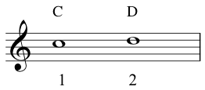
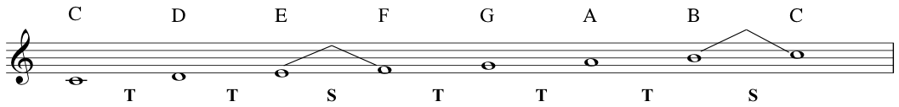

Here is the interval of a second as shown in the video:
Tones and semitones:
Note that using only white notes we have identified two 'sets' of semitones. The first set is between B and C, the other set is between E and F.
These intervals can most clearly be seen on a keyboard because there is no black key between them - if you look back at the keyboard graphic you will see this.
The C major scale:
Knowing the difference between these tones (T) and semitones (S), allows us to derive the C major scale:
C is the tonic here, and this scale is an example of a diatonic scale - one that has a pattern of 2 semitones and 5 tones going from one octave to the next.